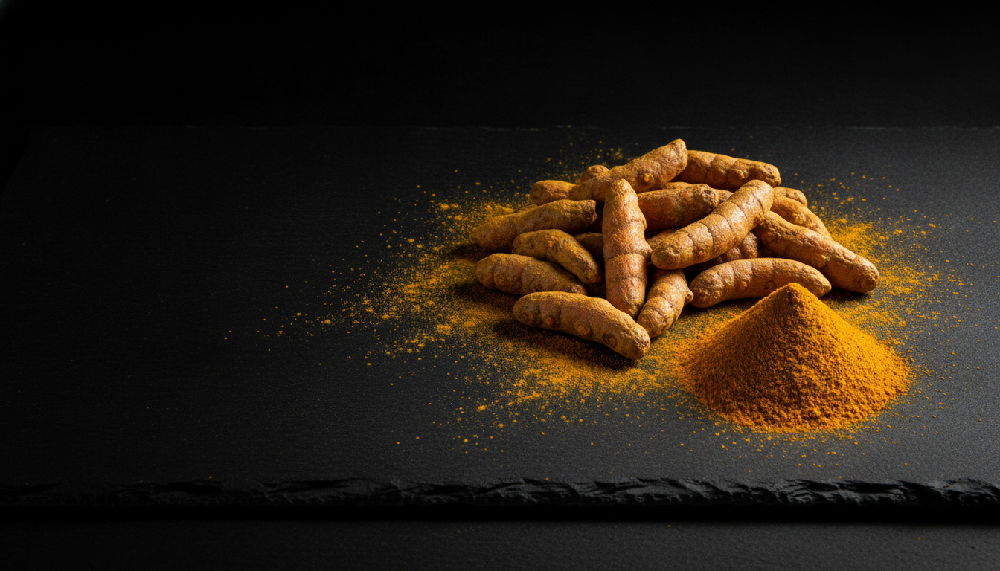
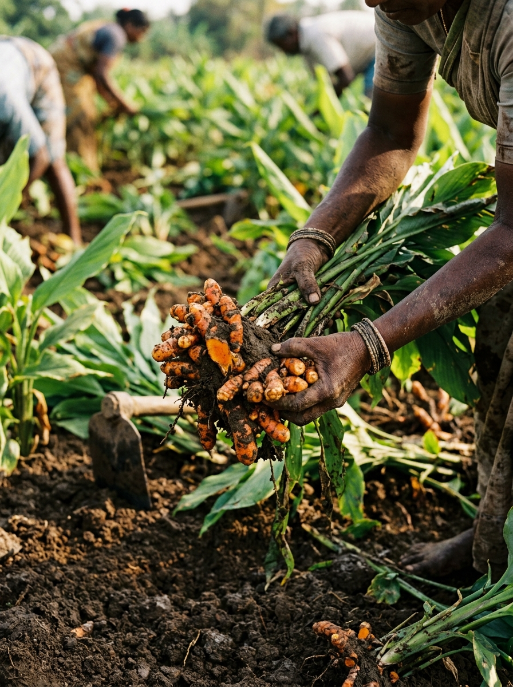
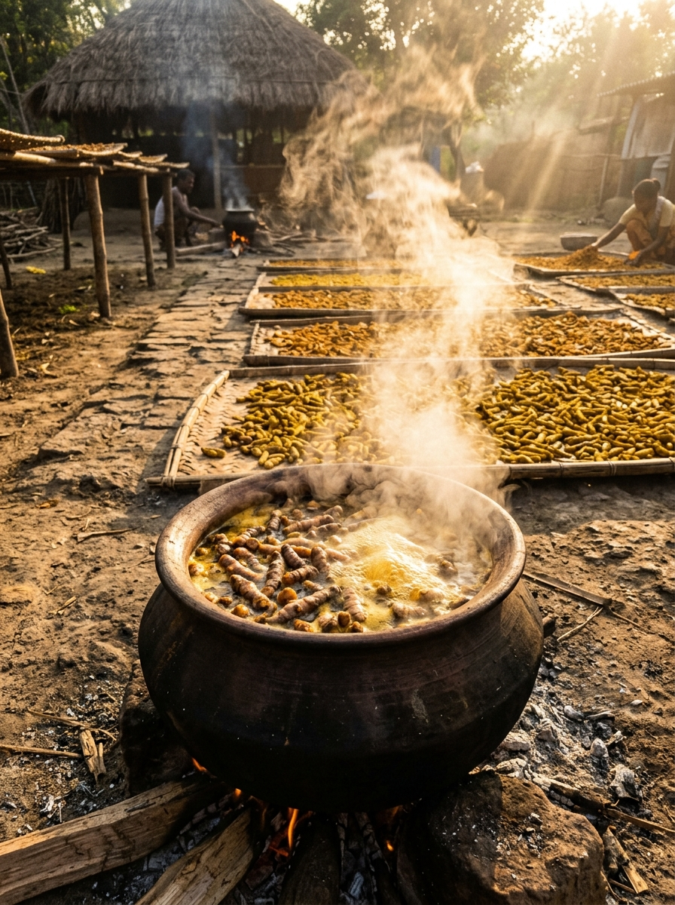
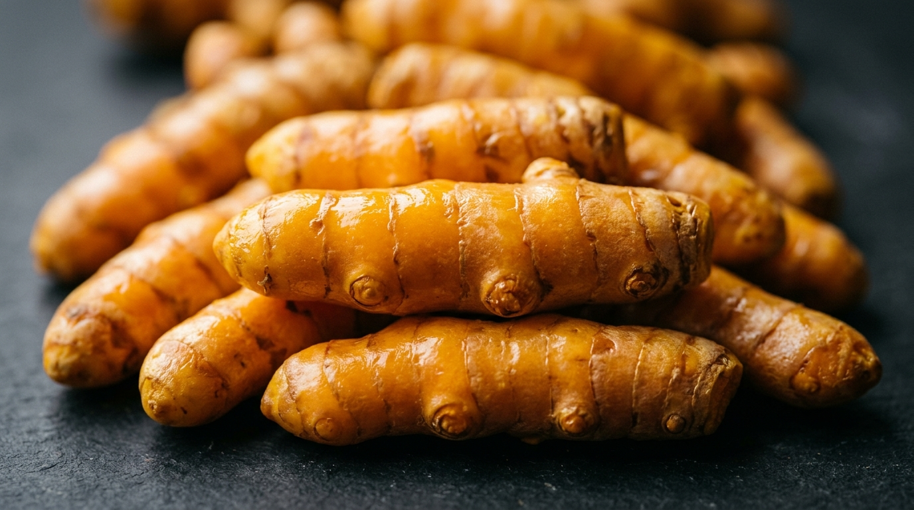
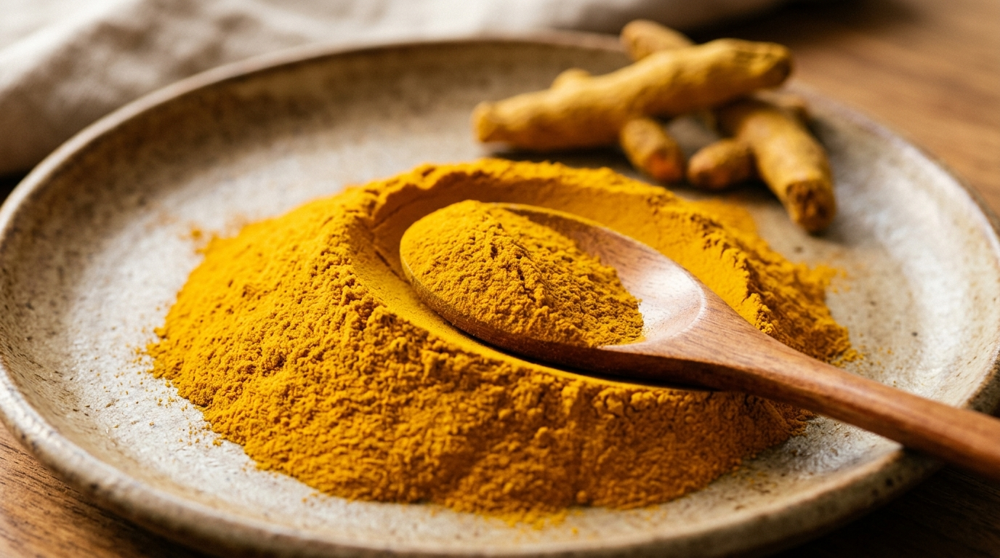

Home / Turmeric
Sangli & Salem turmeric — India's golden standard.
Hard, bright fingers from two of the country's most prized turmeric belts — graded by curcumin and screened lead-chromate-free for safe, honest colour.
The sacred spice, measured in curcumin.
Turmeric has been India's golden spice for more than four thousand years — sacred in ritual, central in the kitchen, and now one of the most sought-after ingredients in the global wellness and food-colour industries. Where modern buyers used to ask "how bright?", they now ask "how much curcumin?".
We answer from two belts that lead on exactly that. Sangli, in Maharashtra, is one of Asia's largest turmeric trading hubs, famed for hard, lustrous fingers. Salem and the Erode belt in Tamil Nadu are prized for high-curcumin turmeric — the benchmark for food, colour and nutraceutical buyers. We grade by curcumin and colour, and we screen every lot lead-chromate-free.
- Curcumin-graded — typically 2–5%, set to your requirement.
- Hard, bright fingers — boiled, dried and polished.
- Lead-chromate screened — honest colour, safe to eat.


Bright shouldn't mean dangerous.
Some turmeric on the world market is brightened with lead-chromate — a toxic industrial pigment used to fake a richer yellow. It's one of the most serious adulteration risks in the spice trade.
We treat it as a hard line. Our turmeric gets its colour from curcumin and curing, not from a pigment, and every lot is explicitly screened for lead-chromate before it ships. The number you see on the spec sheet is real, and so is its safety.
Turmeric grades & typical specs.
Indicative ranges — exact curcumin and colour are set per order and confirmed by lab report.
| Grade / form | Curcumin | Moisture | Screening | Best for |
|---|---|---|---|---|
| Salem high-curcumin finger | 3.0–5.0% | ≤10% | Pb-chromate: not detected | Nutraceutical, colour, premium |
| Sangli bright finger | 2.0–3.5% | ≤10% | Pb-chromate: not detected | Culinary, retail, export |
| Bulb / round | 1.5–2.5% | ≤10% | Pb-chromate: not detected | Grinding & processing |
| Cold-pressed powder | to spec | ≤10% | Pb-chromate: not detected | Masalas, food colour, retail |
Fingers or cold-pressed powder.

Whole turmeric fingers
Boiled, sun-dried and polished fingers, graded by belt and curcumin. Hard, bright and clean — ready for grinding or whole-spice use.
- Sangli & Salem grades
- Curcumin-graded
- Lead-chromate screened

Cold-pressed turmeric powder
Low-RPM milled to protect colour and curcumin, ground to your mesh. Deep, even gold with the curcumin figure confirmed by lab report.
- Curcumin verified per lot
- No added colour — ever
- Mesh ground to order
From the kitchen to the capsule.
Culinary & HORECA
Even colour and warm, earthy flavour for curries, rice and ready meals.
Natural food colour
Honest, curcumin-driven yellow for sauces, snacks and dairy.
Nutraceutical
High-curcumin lots for supplements, extracts and wellness products.
Retail & private label
Whole and powdered turmeric packed under your own brand.
Specify your curcumin. We'll match it.
Tell us the curcumin level, form and volume — we'll send documented, lead-chromate-screened samples.